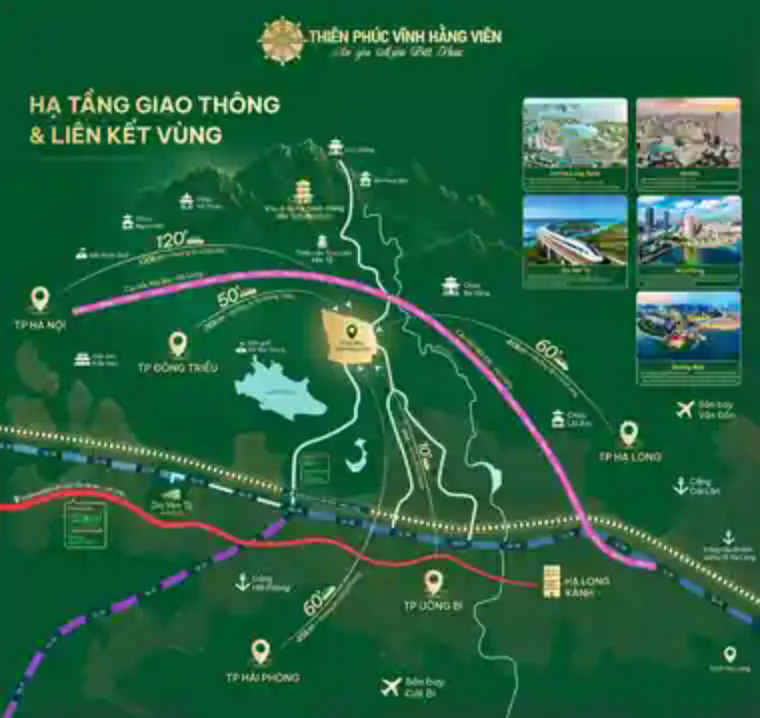

Vị trí Thiên Phúc Vĩnh Hằng Viên tại Uông Bí – Yên Tử, Quảng Ninh
Vị trí là một trong những yếu tố quan trọng nhất khi lựa chọn nơi an nghỉ lâu dài, bởi nó ảnh hưởng trực tiếp tới hành trình thăm viếng của nhiều thế hệ.
Vị trí gắn với vùng văn hóa và cảnh quan đặc trưng của Quảng Ninh
Thiên Phúc Vĩnh Hằng Viên được phát triển tại khu vực Uông Bí – Yên Tử, tỉnh Quảng Ninh. Đây là vùng được biết đến với cảnh quan tự nhiên và chiều sâu văn hóa – tâm linh, đồng thời nằm trong mạng lưới giao thông kết nối các trung tâm lớn của miền Bắc.
Đối với công viên nghĩa trang sinh thái, vị trí không chỉ được đánh giá bằng khoảng cách. Gia đình còn cần quan tâm tới tuyến đường tiếp cận, môi trường xung quanh, cảnh quan và khả năng quay lại thăm viếng thuận tiện trong nhiều năm.

Khả năng kết nối từ Hà Nội, Hải Phòng và Hạ Long
Theo các thông tin dự án hiện công khai, khoảng cách tham khảo tới khu vực Thiên Phúc Vĩnh Hằng Viên vào khoảng 120 km từ Hà Nội, khoảng 45 km từ Hải Phòng và khoảng 40 km từ Hạ Long. Khoảng cách thực tế có thể thay đổi tùy điểm xuất phát và tuyến đường lựa chọn.
Khả năng kết nối liên tỉnh có ý nghĩa đặc biệt với các gia đình có thành viên sinh sống ở nhiều địa phương. Một nơi an nghỉ có tuyến đường thuận tiện giúp việc trở về thăm viếng vào các dịp giỗ, lễ, thanh minh hoặc ngày tưởng niệm chủ động hơn.
Giá trị của khu vực Yên Tử đối với không gian tưởng niệm
Yên Tử gắn với lịch sử và văn hóa Phật giáo Việt Nam. Với một công viên nghĩa trang tại khu vực này, giá trị nổi bật không nằm ở việc đưa ra những khẳng định phong thủy tuyệt đối mà ở bối cảnh cảnh quan, văn hóa và sự thanh tĩnh của vùng đất. Đây là những yếu tố có thể tạo nên cảm nhận trang nghiêm cho một không gian tưởng niệm lâu dài.
Vị trí thuận tiện có ý nghĩa gì với gia đình?
Dễ chủ động lịch thăm viếng
Việc di chuyển thuận tiện giúp gia đình không phải coi mỗi lần thăm viếng là một hành trình quá phức tạp, đặc biệt khi có người lớn tuổi cùng đi.
Thuận lợi cho nhiều thế hệ
Nơi an nghỉ tồn tại qua nhiều thế hệ. Vì vậy, khả năng tiếp cận lâu dài quan trọng không kém thiết kế của phần mộ tại thời điểm lựa chọn.
Kết nối với hạ tầng của hoa viên
Vị trí bên ngoài cần đi cùng giao thông nội khu hợp lý. Bãi đỗ xe, đường đi và khoảng cách tới các khu chức năng là những yếu tố nên kiểm tra khi tham quan. Xem thêm tiện ích Thiên Phúc Vĩnh Hằng Viên.
Nên kiểm tra gì khi đến xem vị trí thực tế?
Gia đình nên quan sát tuyến đường từ trục giao thông chính vào dự án, địa hình, cảnh quan xung quanh, vị trí các khu mộ và khoảng cách tới khu đỗ xe, nhà điều hành cũng như không gian tâm linh. Nếu đã xác định nhu cầu, hãy đồng thời xem trực tiếp khu mộ đơn, mộ đôi hoặc khu gia tộc.
Câu hỏi thường gặp về vị trí Thiên Phúc
Thiên Phúc Vĩnh Hằng Viên nằm ở đâu?
Dự án nằm tại khu vực Uông Bí – Yên Tử, tỉnh Quảng Ninh.
Từ Hà Nội tới dự án khoảng bao xa?
Khoảng cách tham khảo theo thông tin dự án hiện công khai là khoảng 120 km. Thời gian và quãng đường thực tế phụ thuộc điểm xuất phát và tuyến di chuyển.
Có nên xem vị trí trực tiếp trước khi lựa chọn?
Có. Tham quan thực tế giúp gia đình đánh giá những yếu tố khó thể hiện đầy đủ trên bản đồ như địa hình, cảnh quan, đường nội khu và khoảng cách giữa các khu chức năng.
Đăng ký tham quan Thiên Phúc Vĩnh Hằng Viên
Tìm hiểu tuyến đường, cảnh quan và vị trí các khu an nghỉ trước khi đưa ra lựa chọn.